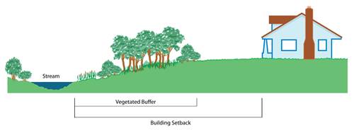

Riparian Setbacks
What is it?
Riparian setbacks are specific recommendations or regulations (ordinances) that protect riparian areas from construction impacts or other damaging activities. Riparian setbacks protect surrounding land and watershed health by naturally reducing flooding impacts, preventing erosion of streambanks, reducing amount of pollutants entering streams, and protecting important wildlife and fish habitats.

Conservation Benefits
- Natural flood control
- Prevents erosion of streambanks
- Reduces amount of pollutants entering streams
- Provides important fish and wildlife habitat
- Maintains riparian connectivity
- Protects aesthetically pleasing areas
- Promotes good land stewardship
What does it include?
Landowners, homeowner associations, land developers, cities, counties, or the state can implement riparian setback recommendations. Riparian setbacks will vary by region and should be developed with the guidence of technical experts. Recommendations should consider stream type, stream size, and species habitat needs. Stakeholders or municipalities use these recommendations to implement regulations for their region.
Riparian Setback Links
- Big Darby Creek Watershed Riparian Setbacks
- Why Riparian Setbacks? (Chagrin River Watershed Partners, Inc.)
- Geauga Soil and Water Conservation District
- Setback Recommendations to Conserve Riparian Areas and Streams in Western Placer County
- Technical and Financial Assistance for Responsible Development near Montana's Rivers, Streams, and Wetlands
Riparian Setback Bibliography